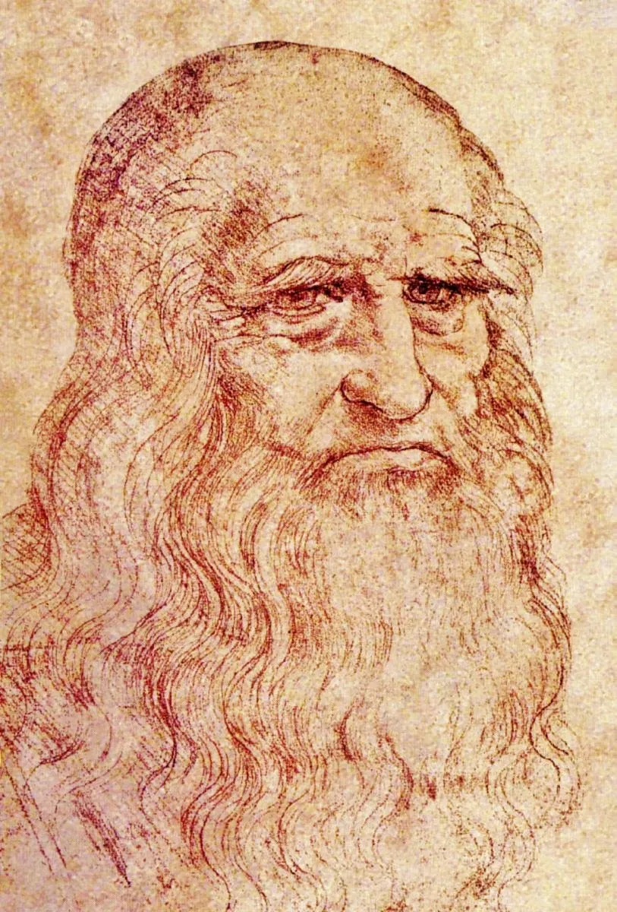

Il museo di Leonardo

Leonardo - Autoritratto
Leonardo è uno dei massimi esponenti dell'unione tra umanesimo e
scienza. Uomo d'ingeno e talento universale del Rinascimento Italiano;
fu pittore, scultore, architetto, ingegnere, matematico, anatomista,
musicista, inventore e scienziato.
Incarnò appieno lo spirito universalista della sua epoca, portando
alle maggiori forme di espressione nei più disparati campi dell'arte e
della conoscenza. È considerato uno dei più grandi geni dell'umanità.